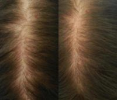
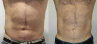

Name: The Well Path – New York
Display name: The Well Path – New York
Mission: Dr. Heskett’s goal with each client is understanding what will make them the happiest and most productive person they can be. She often says “My mission is to free people from the distraction of their insecurities so they can focus fully on what is really important to them. Helping people stay on a positive, progressing health and fitness path is incredibly rewarding. It makes me happy!”
Website: https://www.thewellpath.com
Office hours: Mon: 10:00am – 8:00pm
Tue: 10:00am – 8:00pm
Wed: 10:00am – 8:00pm
Fri: 10:00am – 8:00pm
Sat: 10:00am – 3:00pm
Phone: (332) 244-3246
Twilio phone: (332) 244-3246
Address: 5 W 37th St., Ste. 606, New York, New York, USA, 10018
City: New York
State: New York
Country code: US
Postal code: 10018
Phone: (212) 737-9604
Country: USA
GPS coordinates on map: 40.7508732,-73.9839671
Treatments:
- LED Light Therapy
- Skin Tightening
- ThermiSmooth Face
- ThermiVa
- TriPollar
- Vampire Facelift
- Velashape
- Volbella
- Vollure
- Voluma
- Xeomin
- Zerona
- Emsculpt
- Skin Rejuvenation
- Lymphatic Massage
- truSculpt
- HydraFacial
- Hair Loss Treatment
- Dermal Fillers
- Belotero
- Botox
- Carboxytherapy
- Chemical Peel
- Derma Roller
- Dermapen
- eMatrix
- Endermologie
- Facial
- Glycolic Peel
- Hand Rejuvenation
- i-Lipo
- IPL
- Juvederm
- Laser Hair Removal
- Laser Liposuction
- Microneedling
- PRP for Hair Loss
- PRP Injections
- Radiesse
- ReFirme
- Salicylic Peel
- Scar Removal
RealSelf Info
Profile created: May 3, 2018
Profile modified: Jun 3, 2022
Business type: Medical Spa
Review count: 29
Rating: 5.0
Rating time spent: 5
Rating answered questions: 5
Rating bedside manner: 5
Rating after care: 5
Rating payment process: 5
Rating wait times: 5
Rating courtesy: 5
Rating responsiveness: 5
RealSelf’s PRO: Yes
Realself network status: candidate
Special Offers
Heading
Start Time / End Time
Detail
Treatments
$25 Off Oxygeneo Facials
Feb 12, 2020 /
Mar 12, 2020
Use Code “FACIALRS25” to Redeem Online or at Checkout
Specific treatments
25% Off Each EmSculpt Session
Feb 12, 2020 /
May 17, 2033
Use Code “SCULPTRS25” at Checkout or Online to Redeem. Valid for Maximum 4 Treatments.
Specific treatments
Complimentary Consult with Dr. Heskett
Sep 19, 2018 /
Oct 19, 2018
Complimentary consultation with Dr. Heskett for face or body.
consultation
$200 off TruSulpt 3D
May 26, 2018 /
Jun 30, 2018
$200 off one area of TruSculpt 3D. New patients only.
Specific treatments
$50 off carboxytherapy
May 26, 2018 /
Jun 26, 2018
$50 off your first treatment. New patients only.
Specific treatments
Doctors

Jamé Heskett, MD
Name: Jamé Heskett, MD
Statement: Dr. Jamé Heskett has over two decades of experience helping patients look and feel their best. She is the founder of The Wellpath a medical aesthetics and wellness center which has locations in New York City and Westchester NY. “It is a holistic process to guide every client on their own "’path’", one that I take very personally,” says Dr. Heskett. Though she offers a comprehensive menu of solutions to aesthetic concerns, she is best known for her use of carboxy therapy to repair damage from liposuction and surgery as well as for cellulite, stretch marks, and hair growth. She is a published author of The Well Path a 60 day program for vital aging and incorporates this expertise into her personalized plans for her clients. "There is no One Size Fits All solution and we provide options for every philosophy, schedule, stage of life and budget. My goal is always to look at the client first, the concern second and the solution third."
Dr. Heskett received her medical degree from George Washington University. Dr. Heskett is proud to be the first New York City provider of carboxytherapy, an injectable treatment that helps improve cellulite, stretch marks, and dark circles. She is the author of The Well Path: Lose 20 Pounds, Reverse the Aging Process, Change Your
Began aesthetic medicine in: 2001
Rating: 5.0
Staff
Name: Lindsey Rando, L.E.
Position: Master Aesthetician
Years experience: 5
Biography: Lindsey studied Skin therapy at Dermalogica Academy, an advanced and accelerated program focused solely on skin techniques, with continued education at the International Dermal Institute. Since then, she has acquired a Cosmetic laser certification from Safe Lase Institute and received specialized training in the science of top skin care brands including Dermalogica, PCA Skin, Epicuren and HydroPeptide.
She began working at Wellpath in 2015 where she received specialized training and guidance from Dr. Jamé Heskett. While learning to develop and perfect her techniques and approach, she was promoted to Treatment Director.
She is a highly trained Esthetician who listens to your specific requests and concerns to effectively determine appropriate, successful treatments for clients with the highest level of personalized service that is unmatched. Lindsey makes it her top priority to balance and enhance your skins natural radiance.
Name: Rob Morean
Position: Spa Manager
Years experience: 3
Biography: Rob Morean is an actor, philanthropist, singer, dancer and model living in New York City. Originally from Caracas, Venzeula, Rob grew up in Miami for most of his life before moving to New York City to study Musical Theater at Tisch School of the Arts at NYU. Rob join The Wellpath in the summer of 2019 as the Social Media Manager, and is now happily working full time for Dr. Jamé Hesett as her Office Manager and Director of Marketing.
On Broadway, Rob was recently in Harvey Fierstein's "Torch Song" in 2018. He was on Black Lightning on the CW and recently filmed for the upcoming HBO Max show starring Kayley Cuoco, The Flight Attendant. Additionally, Rob has performed in venues all over New York City including 54 Below, The Plaza, Capitale, The Green Room 42, The Triad, The Duplex, Birdland, Skirball Center for the Performing Arts, and more. He has hosted the Man and Woman of the Year Gala nationally 3 years in a row and has opened for Robin Thicke in the Central Park Summer Stages.
Name: Jessica Costa
Position: Registered Nurse
Biography: Jessica received her BS in Nursing from the College of Mount Saint Vincent.
Jessica has a unique combination of nursing skills and the proficiency to provide the best treatment possible. She believes in building a long lasting and trusting relationship with clients. Known for her calm, gentle touch, she understands the power of scientific skin care and enjoys the satisfaction of helping her clients become the best version of themselves. Jessica specializes in Carboxy therapy and PRP +Microneedling, though she enjoys working with clients to provide a positive experience through all services we provide. She has brought to Wellpath her knowledge, compassion and strong attention to detail to deliver clients exceptional results.
Name: Alejandra Rivera
Position: Receptionist
Practice's answers
Question
Answer Header & Date
Answer Snippet
28 years old- Is preventative IPL better than waiting until there are age spots to treat?
Is IPL a good idea for spots that cannot be seen to prevent them from coming out?
Apr 28, 2022
Hi
I would focus on wearing good sunscreen, and using a retinol in the winter time. Get regular facials or peels to stimulate cellular turnover. I don’t think that spending money on IPL is going to be a worthwhile choice right now. If you see a spot come out….You can always ask for it to be treated as a “spot treatment” and see if they will give you a discounted rate since they are only going to discharge their device once or twice and take up a 15 min time slot at the most.
How bad is the damage from this microneedling?
Why did microneedling make my skin look worse?
Apr 28, 2022
Hi,
I’m sorry you have had this experience. This is not a normal result of microneedling by someone with experience using a quality needling device. If this was done with a roller, a roller will rip the skin instead of puncture it and that can damage the delicate facial skin. Perhaps the depth setting for the needling device was not set properly, or that the technique used was not proper for facial rejuvenation. The goal is to puncture the skin, not tear it and to allow rejuvenating s...
I have red/brown skin on my face after microneedling, what can I do? Is this permanent?
Why is my skin hyperpigmented after microneedling?
Apr 28, 2022
Hi, Hyperpigmentation is caused by inflammation stimulating the melanocytes in your skin. This is not a normal outcome of microneedling but of a proceedure that created excess inflammation in your skin. Perhaps the settings were not appropriate for your skin or a roller was used or possibly the solution of liquid that was used during the proceedure was one that reacted with your skin. It is hard to know, but for sure under circumstances that microneedling is performed by someone with...
My acne scars are much deeper after microneedling, what could have happened?
Why do I have deeper scar after microneedling?
Apr 28, 2022
Hi
This should not happen with microneedling done by someone with experience. Was the needling done with a roller? If so, a roller can rip the skin as the needles do not go in and out of the skin at a 90 degree angle but rather flip out of the skin as the roller rotates. Perhaps the person used a depth setting that was too deep and or over punctured the area. It’s hard to know, except that this is not a normal outcome of microneedling with a pen device that is operated by someone who is e...
What are my best options for improving mastopexy scar texture?
What is the best way to improve large scars?
Apr 28, 2022
Hi, the best approach to this scar is to use carboxy therapy. Carboxy therapy is the injection of medical grade CO2. The CO2 restarts the healing process that has stopped and left you with a scar. The scar is injected weekly for 4 weeks and then twice a month until the improvement reaches a plateau. The result will be a shrinking or narrowing of the scar, a filling in of the scar if there is a defect and repigmentation or lightening of hyperpigmentation. You can expect at least 50%...
Latest Before And After Photos
-

-
Doctor The Well Path – New York 47 Year Old Spouse Treated With Thinning Hair Candidate
-

-
47 Year Old Man Treated With I-Lipo By Dr. The Well Path – New York
-
-
Doctor The Well Path – New York 69 Year Old Ms. Treated With Injectable Fillers Pic
Last updated on 12/13/2023